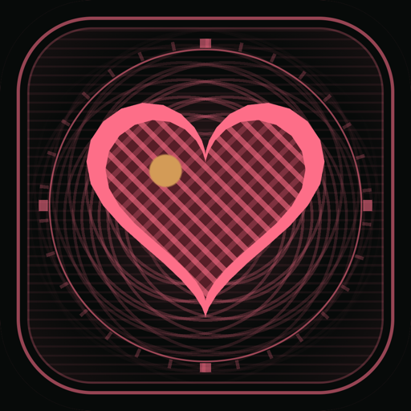
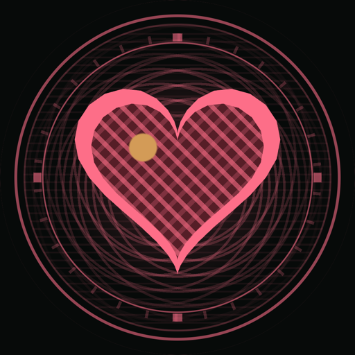

品牌指南 · Brand guide
MiYa
用大白话看懂你的健康数据。一份只在你自己的 iPhone 上生成的 Apple 健康报告。视觉是一张钞票凹版:米纸、排线、双线框、扭索纹,中间一颗品牌红的心。
怎么说话
一句大白话,讲完就停。每个数字下面最多一句解读,先说结论,再给一个日常比方。术语只留一句解释,放进「?」气泡里。
| 场景 | 这样写 | 不这样写 |
|---|---|---|
| 指标解释 | 静坐时每分钟心跳,越低越省力。 | 静息心率(RHR)是衡量心血管健康的重要指标…… |
| 变化 | 心脏比之前每分钟少跳 6 下,干活更省力了。 | 您的静息心率呈显著下降趋势。 |
| 分数 | 0–100,和你的平时比。 | 基于先进算法的综合健康评分 |
| 页标题 | 健康 / 心率 / 恢复 / 活动 / 运动 / 数据 | 我的健康数据总览中心 |
| 进度 | 还差 12 公里 | 距离下一站尚有 12 公里路程! |
基本规矩
- 称呼用「你」,不用「您」。英文用 you,句子短,不用感叹号。
- 不用 emoji。原本放 emoji 的地方,一律换成凹版图标。
- 数字与单位之间空一格:
62 次/分、48 ms、近 90 天。 - 中英两套文案同步改;英文版里不出现中文。
健康边界是硬规矩
分数一律说成「和你的平时比」的相对估算,不说正常或异常。没有睡眠数据时直说无法判断。绝不写诊断,不出现「心脏不好」「可能患有」。需要提醒时,给出能做的事:
如有胸痛、明显气短、头晕或心悸,请停止运动并及时就医。
隐私要说得具体
用能核对的事实,不用形容词。不写「军工级加密」「绝对安全」。
所有计算都在你的 iPhone 上完成。不注册账号,没有服务器,没有统计分析,没有广告。只读取「健康」里的数据,从不写入。
名字
M 和 Y 大写,中间没有空格。中文和 MiYa 之间留一个空格。App 内页头只写一个词:「健康」。
唯一的写法。
中文商店名。英文商店名是 MiYa Health Report。
都不对。
色彩
界面以中性色为主,品牌红一屏只出现在一两处。凹版件(图标、横幅、纹章、App 图标)有自己的一套墨色:浅色是墨绿配米纸,深色是古铜金配近黑。
accent · #f2385a / #ff4768engrave-line · #2f6b55 / #d9b56fengrave-gold · #c9a44c / #f2cf7a左半:浅色主题右半:深色主题
用色规则
- 页面用
page打底,卡片用surface。卡片不画边框,靠shadow和页面分开。 - 品牌红
accent只给主按钮、选中态、焦点圈和首页那颗心。选中项的底用accent-soft。 - 状态色只画图形(点、条、圆环),每个状态都配一个词或箭头,不能只靠红绿区分。
- 金箔每个凹版件只点一处:指针、落脚点、高亮日、心上的那粒圆点。
- 两处对比度偏低,目前保留原值:浅色主题下
ink-muted在白底上只有 3.2:1,只给可有可无的注脚;白字放在accent上是 3.8:1,所以主按钮文字用 13px 粗体以上。
字体
只用系统字体:中文苹方,西文 San Francisco。App 不连外网,所以不加载任何网络字体。字号按 φ 递进:11 → 13 → 16 → 21 → 34 → 55。
- 数字成列对齐的地方一律加
tabular-nums。 - 标题字重 600,数值 680,眉标 700 加 0.08em 字距。
间距与比例
间距只取斐波那契数列,相邻两级之比趋近 φ = 1.618。黄金比例也是构图规则:主体落在 38.2% / 61.8% 的黄金点上。
- 卡片分栏用
1.618fr : 1fr,本页的封面和章节标题就是这样排的。 - 焦点、指针、高亮日放在黄金点;表盘开口 ±38.2°;宽高比取 1 : φ。
- 一屏一件主角:总览第一屏是能量纹章,其余每页的页头是一条封面横幅。插图里不写数值。
标志
三枚标志都来自同一条心形线。用原件,不要重画;心形不用通用的 ♥ 字符或第三方图标代替。

App 图标
深色底,φ 刻度环、扭索纹、排线填面的品牌红心,一粒金箔。圆角由系统裁切,不要自己加框或阴影。

手表图标
同一颗心的手表版,系统裁成圆形。改任何一处图标,iPhone、手表、小组件三个 target 的版本号一起改。
心形标
米纸底、双线框、品牌红心形。浏览器标签和 32px 以下的场景用它。深浅主题都用同一份。
图标与插画
图标是纯 CSS 画的凹版小件,1:1 圆角框:米纸版面、双线框、慢转的扭索纹环、主体(排线填面、双线描边、一点金箔、一种色洗),再加一个小动效。每个图标都有一个数学母题。
心形线 x = 16 sin³t
鞋底 1 : φ 的黄金椭圆,两脚落在 38.2% / 61.8%
φ 五芒星,对角线 : 边 = φ
φ 刻度环,半径 23.6 → 38.2
黄金螺旋,光点从极点向外走
正方形转 45°,高 : 宽 = √2 : 1
同一个圆切两段弧,按 38.2% / 61.8% 开合
开口 ±38.2° 的 φ 刻度弧
三级踏步按 φ 递进
- 新图标先找母题,再画。焦点放在黄金点,颜色只取凹版三色和一种系列色作色洗。
- 尺寸只改
--gi-size;小于 48px 时去掉刻度环与构造线,线条加粗。
动效
默认安静。一次只有一个主动作,其余是很慢的呼吸或旋转。
- 缓动统一
cubic-bezier(.23,1,.32,1):先快后稳。 - 主动作跟数据走:纹章指针扫到电量的位置、地图航迹进场。只动
transform和opacity。 - 扭索纹慢转一圈 60–240 秒。本页右上那枚纹章转一圈 120 秒。
- 系统打开「减少动态效果」时,一切静止。
制作工具
做 MiYa 的界面与插画,先用这些 agent 技能,不要每次从零画。
| 技能 | 在 MiYa 里用来做什么 | 状态 |
|---|---|---|
| golden-engraving 黄金比例凹版插画 | 凹版图标、App 图标的那颗心、说明书式插画。现有 17 个图标都出自它。 | 主力 |
| engraved-ui 凹版界面构件 | 封面横幅、能量纹章、图表卡的印版外壳、寻宝地图、手机上的高密度表。 | 主力 |
| ui-review UI/UX 走查 | 改完界面后截图,按尼尔森十原则出问题清单。截图里有健康数据,只交给本机模型看。 | 常用 |
| ui-ux-pro-max UI/UX Pro Max | 查对比度、触控尺寸、图表类型这些硬规则。只查规则,不换风格。 | 常用 |
| emilkowalski-skill Emil Kowalski UI Skills | 审查动效:缓动方向、能否中断、减少动效。 | 可用 |
| mandala-emblem 曼陀罗花纹章 | 长页面两节之间的分隔小章、成就徽章。不能和首页纹章抢第一眼。 | 还没用 |
| particle-emblem 粒子纹章 | 粒子聚成纹章的开场横幅。只适合网站或商店宣传页。 | 还没用 |
| math-explainer 代码科普分镜 | 讲清一个反直觉结论,比如「HRV 为什么越高越好」。 | 还没用 |
| apple-brand-design Apple 级品牌设计指南 | 只借原则和标志保护规则。它要加载 MiSans 网络字体,MiYa 不连外网,这部分不用。 | 只借原则 |
| anatomy 等轴测工程图 | 等轴测机械风格和凹版冲突。 | 不适合 |